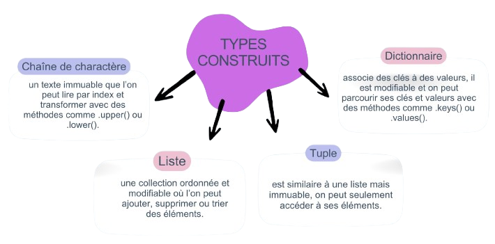

1. Les chaînes de caractères (str)
Définition
Une chaîne de caractères est une suite de texte, comme "Bonjour". En Python, les chaînes sont immuables, ce qui signifie qu’on ne peut pas modifier directement un caractère. Si on veut changer une chaîne, on doit en créer une nouvelle.
Manipulation
On peut accéder aux caractères grâce aux indices (texte[0]) ou extraire une partie avec un slice (texte[0:5]). On peut aussi parcourir la chaîne avec une boucle for pour traiter chaque caractère.
Méthodes importantes
Les fonctions essentielles sont:
- len(): pour afficher le nombre de caractères.
- lower(): pour changer les majuscules en minuscules.
- upper(): pour changer les minuscules en majuscules.
- replace(): pour modifier la copie du str.
Conversion
La méthode split() transforme une chaîne en liste, tandis que join() permet de reconstruire une chaîne à partir d’une liste.
2. Les listes (list)
Définition
Une liste est une collection d’éléments, comme [1, 2, 3]. Contrairement aux chaînes, les listes sont muables, donc on peut les modifier après leur création.
Manipulation
On accède aux éléments avec des indices et on peut modifier directement une valeur. On peut aussi parcourir la liste avec une boucle for.
Méthodes principales
Les méthodes importantes sont:
- append(): pour ajouter un élément.
- insert(): pour en placer un à une position précise.
- remove(): pour supprimer une valeur.
- pop(): pour retirer un élément.
- sort(): pour trier la liste.
- sorted(): pour trier une copie de la liste.
3. Les tuples (p-uplets)
Définition
Un tuple est similaire à une liste, mais il est immuable. Il s’écrit avec des parenthèses, comme (1, 2, 3).
Particularité
On peut lire les éléments avec des indices, mais on ne peut pas les modifier. Les tuples sont utiles pour stocker des données fixes.
4. Les dictionnaires (dict)
Définition
Un dictionnaire stocke des données sous forme de clé : valeur, comme {"nom": "Alice", "age": 20}. Il est muable.Manipulation
On accède aux valeurs grâce à leur clé (d["nom"]). On peut ajouter ou modifier des éléments en utilisant une nouvelle clé ou une clé existante.
Parcours et fonctions
On peut parcourir un dictionnaire avec une boucle for, souvent avec items() pour obtenir les clés et les valeurs. La fonction len() donne le nombre d’éléments, et in permet de vérifier si une clé existe.
5. Les notions communes
Boucle for
Toutes les structures (chaînes, listes, tuples, dictionnaires) peuvent être parcourues avec une boucle for, ce qui permet de traiter chaque élément.
Fonctions essentielles
- len(): donne le nombre d'éléments (pour une liste ou un tuple) ou le nombre de caractères (pour un str).
- in: vérifie la présence d’un élément.
Muable vs immuable
Les listes et dictionnaires sont modifiables (muables), alors que les chaînes et tuples ne le sont pas (immuables).
⚠️ Remarques importantes:
- Une chaîne ou un tuple ne peut jamais être modifié directement : toute modification crée une nouvelle structure.
- L’opérateur in ne vérifie que les clés dans un dictionnaire, pas les valeurs (sauf si on utilise .values()).
- Après un split(), les éléments obtenus sont toujours des chaînes de caractères, même s’ils ressemblent à des nombres.
- La méthode sort() modifie directement la liste, tandis que sorted() crée une nouvelle liste.
- Une liste peut contenir n’importe quel type d’élément, même d’autres listes ou des tuples.
- Les tuples sont souvent utilisés quand on veut éviter toute modification accidentelle des données.
- Python est très flexible : on peut facilement passer d’un type à un autre (par exemple, chaîne ↔ liste).
6. Carte mentale récapitulative
